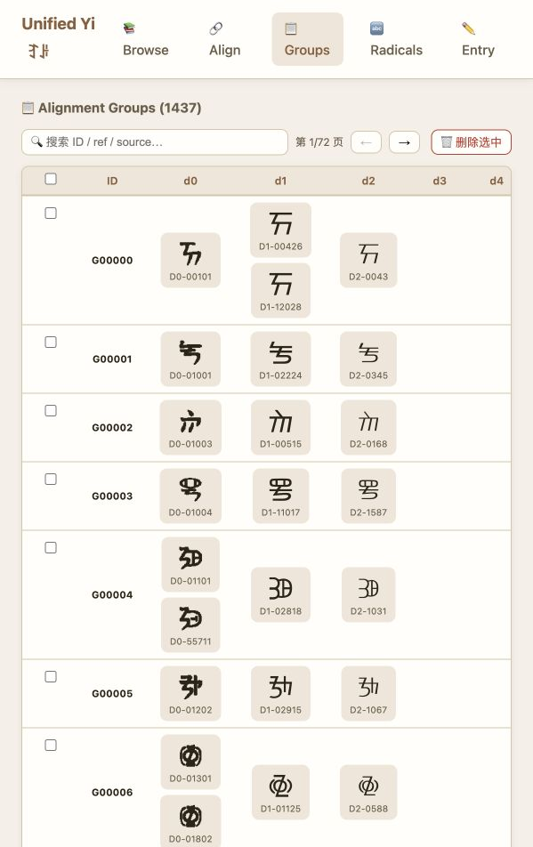
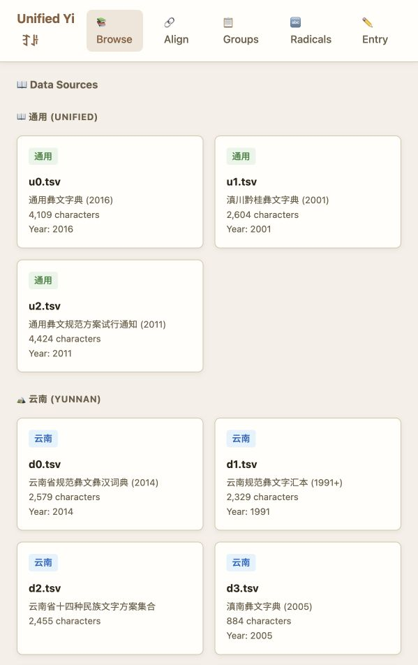
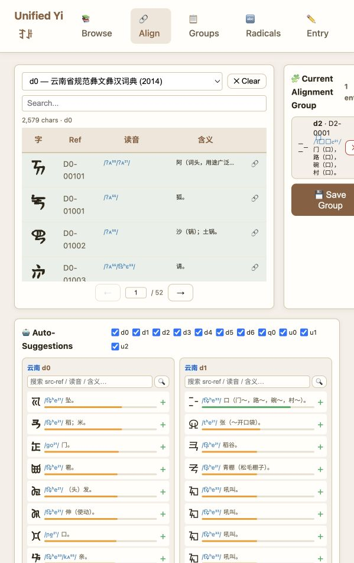
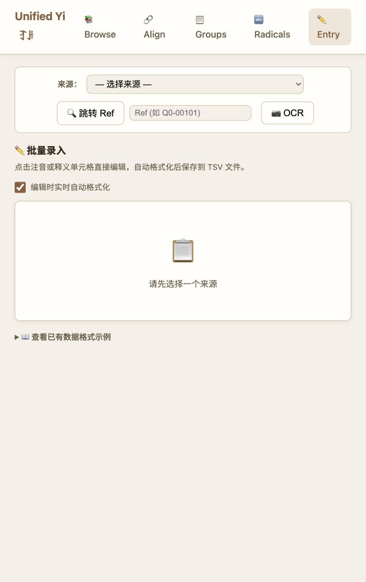
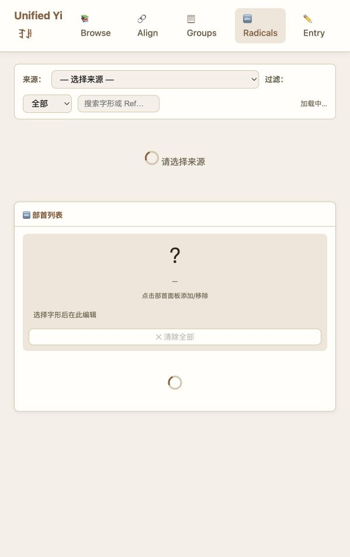

Current Lab · Digital language infrastructure
Unencoded Ideographic Yi
A working website and dataset for documenting, aligning, and reviewing ideographic Yi characters that are not yet fully represented in encoded digital text infrastructure.

For unencoded characters, digital inclusion begins before software can display them: it begins with evidence, alignment, documentation, and review. This project prepares ideographic Yi character data for future encoding, type design, OCR, keyboards, and language technology.



